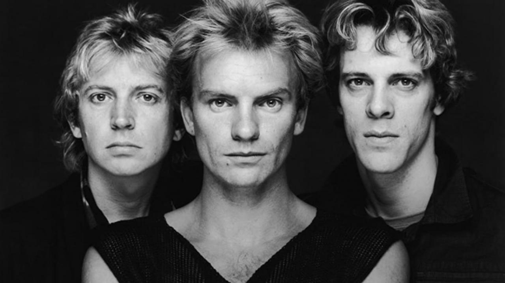
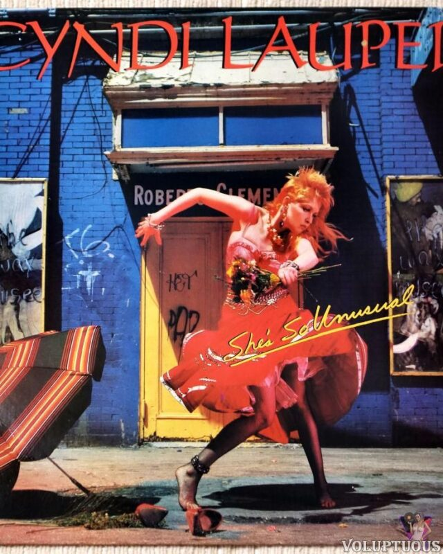

Michael Jackson
Pop
Michael Jackson fue uno de los artistas más influyentes de los años 80, conocido por su estilo único, coreografía y música innovadora.
Playlist destacada
Billie Jean — 1982
Beat It — 1983
Thriller — 1982
Smooth Criminal — 1987
Bad — 1987

Guns N' Roses
Rock
Guns N' Roses fue una de las bandas más influyentes de los años 80, conocida por su sonido rudo, energía y letras crudas.
Playlist destacada
Don't Cry — 1987
Paradise City — 1987
November Rain — 1987

The Police
Rock clásico británico
The Police fue una de las bandas más influyentes de los años 80, mezclando rock, reggae y elementos místicos en sus presentaciones.
Playlist destacada
Every Breath You Take — 1983
Message in a Bottle — 1983
Don't Stand So Close to Me — 1981

Cyndi Lauper
Balada romántica
Cyndi Lauper destacó en los años 80 con un estilo suave, melódico y emocional que marcó a toda una generación.
Playlist destacada
Time After Time — 1984
She Bop — 1983
Girls Just Want to Have Fun — 1983